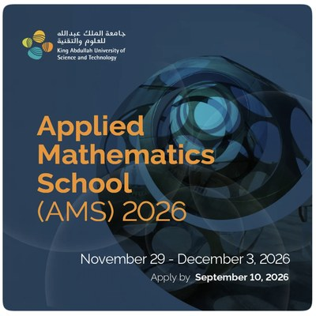
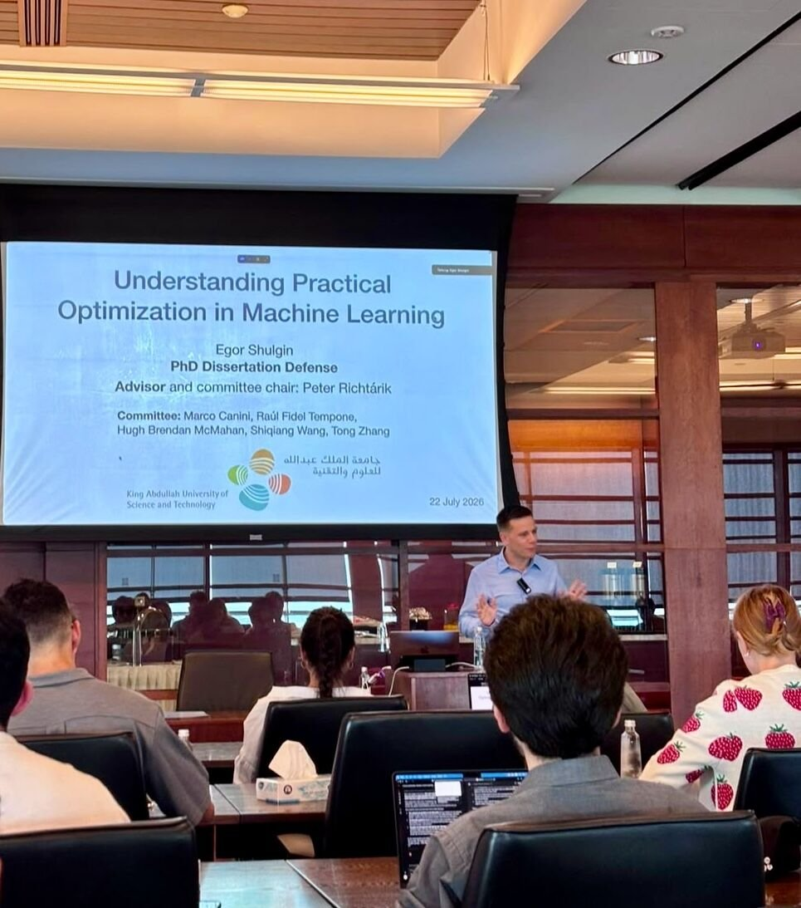
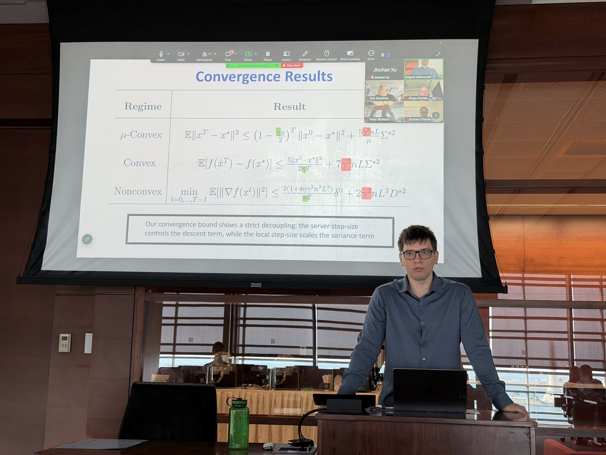
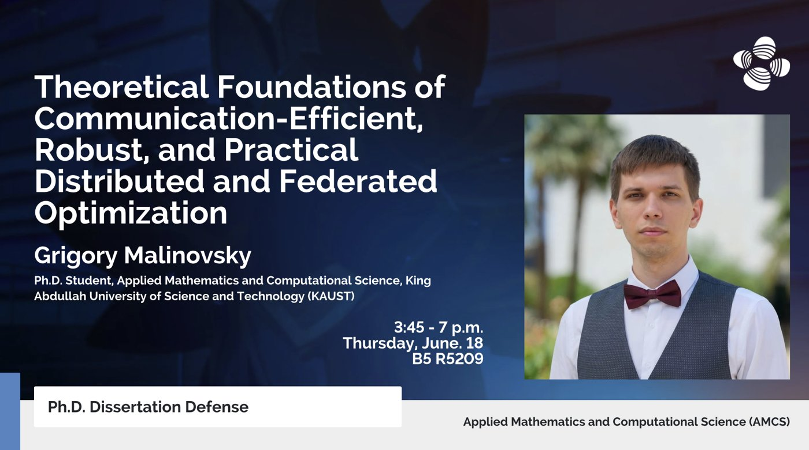
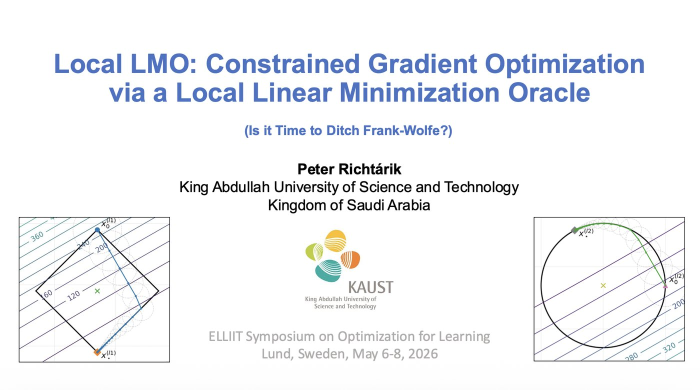

The lab has open positions for interns, MS/PhD students, PhD students, postdocs, and research scientists. Apply.
August 31, 2026
Applied Mathematics School 2026
Applications are now open for the Applied Mathematics School (AMS) 2026, a fully sponsored one-week visiting program at KAUST (November 29–December 3, 2026) for senior undergraduates, master’s students, and recent graduates in mathematics, statistics, physics, and related fields. The deadline is September 10. Also announced on LinkedIn and X.In the past, this has been a good path for people to meet me, and it has sometimes led to internships.

August 29, 2026
Organizing a mini-symposium at ISMP 2027
I will organize a mini-symposium on modern optimizers for deep learning (Muon-type / spectral / orthogonalized / polar-factor methods and other new alternatives) at ISMP 2027 in Amsterdam, July 25–30, 2027, in the stream “Continuous Optimization with Machine Learning”. Invites have been sent. I will keep the details updated on the Events page.August 27, 2026
Back at KAUST
I am now back at KAUST, ready for the start of the Fall semester. I am teaching CS 331 (Stochastic Gradient Descent Methods) on Sundays.August 26, 2026
Slovenskí vedci website updated
I have updated slovenskivedci.sk, a directory of Slovak scientists with a high Hirsch index.The list of scientists was expanded in a major way. Profiles can now be filtered by 12 research areas, and also by field, country, affiliation, and gender. The statistics page has new plots, including h-index by area with min / average / max on one row. There is a compact text-only list, and the header is simpler.
August 23, 2026
Welcome Tigran Melkonyan
Please join me in welcoming Tigran Melkonyan as a new MS/PhD student in our lab!Tigran started his university studies in Applied Mathematics at Yerevan State University, and then transferred to the American University of Armenia to focus on Computer Science. In 2024, his team reached the ICPC (International Collegiate Programming Contest) Northern Eurasia Finals.
He has research experience in communication delays and control-theoretic methods for synchronized drone operations, and in reaction-diffusion PDE modeling of epidemiological systems. Tigran already coauthored a paper: T. Melkonyan, A. Petrosyan, D. Hakobyan, S. Kumar, Comparative Study of Automated Lung Nodule Detection in Chest X-Ray Images Using Pretrained Deep Learning Models.
Tigran arrived to KAUST this weekend and is now attending orientation.
July 22, 2026
Congratulations to Dr. Egor Shulgin!
Please join me in congratulating Egor Shulgin for successfully defending his PhD thesis, Understanding Practical Optimization in Machine Learning.Here is the KAUST announcement.

The committee — Tong Zhang, Brendan McMahan, Shiqiang Wang, Marco Canini, Raul Tempone, and myself — enjoyed the collection of results in Egor’s thesis.
Congratulations, Dr Shulgin!
July 10, 2026
New Paper
New paper out: "Super-Tuning: From Activation-Aware Pruning to Sparse Fine-Tuning" - joint work with Ivan Ilin and Philip Zmushko.We use a pruning-style saliency score to pick a sparse support for fine-tuning, and combine it with LoRA in a hybrid adapter called Supra. arXiv:2607.09287
July 6, 2026
Paper accepted to JOTA
The paper- Laurent Condat and Peter Richtárik. Convergence Analysis of the ProbAbilistic Gradient Estimator Algorithm for Weakly Convex Finite-Sum Optimization, arXiv:2509.00737, 2025,
July 5, 2026
New Paper
New paper out: "SpecGradFilter: A Spectral Gradient Filtering Framework for Taming Federated Heterogeneity" - joint work with Liyang Yuan, Yibo Yang, Dandan Guo, and Zhouchen Lin.We filter federated gradients in the frequency domain, cutting the low-frequency components that carry most of the client drift. arXiv:2607.04189
July 3, 2026
Attending ICML 2026 @ Seoul, Korea
I've just arrived to Seoul, Korea, to attend ICML 2026. Strange as it seems, this is my first time to Korea!Several current (e.g., Abdurakhmon Sadiev, Egor Shulgin, Grigory Malinovsky, Ammar Mahran) and former (e.g., Martin Takáč, Robert Gower, Nicolas Loizou, Konstantin Mishchenko, Nikita Doikov, Adil Salim, Zhize Li, Mher Safaryan, Samuel Horváth, Alexander Tyurin, Slavomír Hanzely, Aleksandr Beznosikov, Rustem Islamov, Andrei Panferov, Kirill Acharya, Philip Zmushko) members of my lab are attending, too. We have several papers spanning the main conference and the workshops:
- Artem Riabinin, Egor Shulgin, Kaja Gruntkowska, Peter Richtárik
From Muon to Gluon: Bridging Theory and Practice of LMO-based Optimizers for LLMs
July 7, Poster Session 1 - Egor Shulgin, Tamaz Gadaev, Sarit Khirirat, Peter Richtárik
Understanding MARS: When Scaling Momentum Correction Provably Helps
July 8, Poster Session 4 - Egor Shulgin, Mohamed Awad, Peter Richtárik, Eduard Gorbunov
General Analysis of LMO-based Optimizers: Beyond Bounded Variance
July 9, Poster Session 7 - Ammar Mahran, Artavazd Maranjyan, Peter Richtárik
Rescaled Asynchronous SGD: Optimal Distributed Optimization under Data and System Heterogeneity
July 9, The 6th Muslims in ML Workshop - Egor Shulgin, Jörg K.H. Franke, Dimitri von Rütte, Tianyue H. Zhang, Niccolò Ajroldi, Korbinian Pöppel, Bernhard Schölkopf, Aaron Klein, Peter Richtárik, Antonio Orvieto
Deriving Hyperparameter Scaling Laws via Modern Optimization Theory
July 10, HiLD 2026: 4th Workshop on High-dimensional Learning Dynamics - Egor Shulgin, Sam Laing, Antonio Orvieto, Peter Richtárik
A Quadratic Lens on Muon: Orthogonalization, Invariance, and Implicit Preconditioning
July 10, HiLD 2026: 4th Workshop on High-dimensional Learning Dynamics
Further notable workshops:
- July 10: Protocol Learning Workshop - with Konstantin Mishchenko, Samuel Horváth and Egor Shulgin
- July 10: AI as a Tool for Mathematics, Computer Science, and Machine Learning - with Adil Salim
Update: Back from Seoul. ICML ran July 6-11.
July 1, 2026
Welcome Xun Qian
Please join me in welcoming Xun Qian as a Research Scientist in our lab (from Shanghai)!Xun was a postdoc with us from 2018 to 2021, and later a Research Scientist at JD Explore Academy in Beijing. Welcome back, Xun!
June 19, 2026
New Paper
New paper out: "Convergence Analysis of Muon-type Methods with Inexact LMO in the Degenerate Case" - joint work with Xun Qian.We analyze Muon-type methods with an inexact linear minimization oracle in the degenerate case. arXiv:2606.21581
June 18, 2026
Congratulations to Dr. Grigory Malinovsky!
Please join me in congratulating Grigory Malinovsky for successfully defending his PhD thesis, Theoretical Foundations of Communication-Efficient, Robust, and Practical Distributed and Federated Optimization.Here is the KAUST announcement.


The committee — Eric Moulines, Zachary Charles, Christopher Brinton, Di Wang, Diogo Gomes, Jinchao Xu, and myself — were deeply impressed by the thesis. Chris said he was honored to serve, as his group is reading all of Grisha's papers. Zachary and Eric singled out Grisha's first internship paper; Zach said it was one of the FL papers that influenced him the most. Everyone praised ProxSkip and the works that followed as a breakthrough.
Congratulations, Dr Malinovsky!
June 16, 2026
Back on campus
After a series of research visits and conference travel, I am now back at KAUST.June 14, 2026
New Paper
New paper out: "SILAGE: Memory-Efficient, Full-Gradient-Free Nonconvex Optimization for Nested Finite Sums" - joint work with Igor Sokolov and Laurent Condat.We propose SILAGE, a memory-efficient variance-reduced method for nested finite-sum nonconvex optimization. arXiv:2606.15832
June 8, 2026
Welcome Jan Niklas Kolzenburg
Please join me in welcoming Jan Niklas Kolzenburg as a new research intern in our lab! Jan Niklas is joining us from the Frankfurt School of Finance & Management.June 2, 2026
New Paper
New paper out: "Demystifying Pipeline Parallelism: First Theory for PipeDream" - joint work with Ivan Ilin.We give the first convergence theory for PipeDream-style pipeline parallelism. arXiv:2606.03498
June 1, 2026
Paper accepted to UAI 2026
The paper- Rustem Islamov, Grigory Malinovsky, Alexander Gaponov, Aurelien Lucchi, Peter Richtárik, and Eduard Gorbunov. Byzantine-robust and differentially private federated optimization under weaker assumptions, arXiv:2603.23472, 2026,
June 1, 2026
Team Awards
Several members of my Optimization and Machine Learning Lab were recognized this year.Dean's List at KAUST: Ammar Mahran (AMCS), Grigory Malinovsky (AMCS), Egor Shulgin (AMCS), Kaja Gruntkowska (Statistics), Abdurakhmon Sadiev (Computer Science), and Hanmin Li (Computer Science).
Igor Sokolov was named an ICLR 2026 Notable Reviewer.
Grigory Malinovsky received a Best Paper Award (runner-up) at the International Conference on Computational Optimization in Abu Dhabi, for the paper "Streamlining in the Riemannian Realm: Efficient Riemannian Optimization with Loopless Variance Reduction" (with Yury Demidovich).
May 30, 2026
DIS 2026 in Czechia
I am on my way to Ústí nad Labem, Czech Republic. On Tuesday (June 2nd), I'll deliver a plenary lecture at The 9th International Conference on Dynamics of Information Systems (DIS 2026). Haven't been to Czechia for many years -- very much looking forward!Update: The plenary was on June 2.
May 26, 2026
New Paper
New paper out: "A Unified Primal-Dual Recipe for Accelerating Three-Operator Splitting Methods" - joint work with Abdurakhmon Sadiev and Laurent Condat.We give a unified primal-dual recipe for accelerating three-operator splitting methods. arXiv:2605.26985
May 20, 2026
New Paper
New paper out: "LOSCAR-SGD: Local SGD with Communication-Computation Overlap and Delay-Corrected Sparse Model Averaging" - joint work with Yassine Maziane, Ammar Mahran, and Artavazd Maranjyan.We study local SGD with communication-computation overlap and delay-corrected sparse model averaging. arXiv:2605.20866
May 18, 2026
New Paper
New paper out: "Distance-Aware Muon: Adaptive Step Scaling for Normalized Optimization" - joint work with Yury Demidovich, Abhishek Chakraborty, Grigory Malinovsky, and Angelia Nedić.We develop adaptive step-scaling rules for Muon-type normalized optimizers. arXiv:2605.18999
May 18, 2026
New Paper
New paper out: "Ringmaster LMO: Asynchronous Linear Minimization Oracle Momentum Method" - joint work with Abdurakhmon Sadiev, Artavazd Maranjyan, and Ivan Ilin.We introduce an asynchronous linear-minimization-oracle momentum method for heterogeneous distributed training. arXiv:2605.18174
May 13, 2026
New Paper
New paper out: "Rescaled Asynchronous SGD: Optimal Distributed Optimization under Data and System Heterogeneity" - joint work with Ammar Mahran and Artavazd Maranjyan.We analyze rescaled asynchronous SGD and obtain optimal rates under data and system heterogeneity. arXiv:2605.13434
May 9, 2026
New Paper
New paper out: "Rennala MVR: Improved Time Complexity for Parallel Stochastic Optimization via Momentum-Based Variance Reduction" - joint work with Zhirayr Tovmasyan and Artavazd Maranjyan.We improve the time complexity of parallel stochastic optimization via momentum-based variance reduction. arXiv:2605.08871
May 9, 2026
New Paper
New paper out: "Local LMO: Constrained Gradient Optimization via a Local Linear Minimization Oracle" - joint work with Kaja Gruntkowska and Hanmin Li.We study constrained gradient optimization via a local linear minimization oracle. arXiv:2605.08850
May 5, 2026
Off to Sweden!
I am off to Lund, Sweden, to attend the ELLIIT Symposium on Optimization for Learning, with a lineup of star speakers. Together with Jeremy Bernstein (Thinking Machines), Jelena Diakonikolas (University of Wisconsin-Madison), Niao He (ETH Zurich) and Alp Yurtsever (Umeå University), I am on the scientific committee for this event. I am the opening speaker on May 6 -- will talk about new exciting work on Local LMO (a new projection-free method for constrained optimization based on a local variant of the linear minimization oracle), to be put on arXiv soon!Update 1: Here are my slides:

Update 2: The paper is on arXiv now.
Update 3: A tweet / X post related to this method.
May 2, 2026
AISTATS 2026, Tangier, Morocco
Together with my PhD students Egor Shulgin and Abdurakhmon Sadiev, I am attending AISTATS 2026 in Tangier Morocco. We are presenting our papers:- Adrien Fradin, Abdurakhmon Sadiev, Laurent Condat, and Peter Richtárik. Tight lower bounds and optimal algorithms for stochastic nonconvex optimization with heavy-tailed noise,
- Egor Shulgin, Sultan AlRashed, Francesco Orabona, and Peter Richtárik. Beyond the ideal: Analyzing the inexact Muon update.
May 1, 2026
Papers accepted to ICML 2026
The following papers from my Optimization and Machine Learning Lab were accepted to ICML 2026, to be held in Seoul, South Korea, during July 6-11, 2026:- Artem Riabinin, Egor Shulgin, Kaja Gruntkowska, and Peter Richtárik. From Muon to Gluon: Bridging Theory and Practice of LMO-based Optimizers for LLMs.
- Egor Shulgin, Tamaz Gadaev, Sarit Khirirat, and Peter Richtárik. Understanding MARS: When Scaling Momentum Provably Helps.
- Egor Shulgin, Mohamed Awad, Peter Richtárik, and Eduard Gorbunov. General Analysis of LMO-based Optimizers: Beyond Bounded Variance.
April 22, 2026
ICLR 2026, Rio de Janeiro, Brazil
Several members of my team are attending ICLR in Rio: Artavazd "Arto" Maranjyan, Kaja Gruntkowska, Alexander Gaponov, and Zhirayr Tovmasyan. They are presenting our papers:- Error feedback for Muon and friends,
- Ringleader ASGD: The first asynchronous SGD with optimal time complexity under data heterogeneity,
- Tighter performance theory of FedExProx.
April 15, 2026
New Paper
New paper out: "Broximal Alignment for Global Non-Convex Optimization" - joint work with Kaja Gruntkowska, Hanmin Li, and Xun Qian.We propose Broximal Alignment, a condition under which the ball proximal point method converges to a global minimizer. arXiv:2604.13483
April 12, 2026
New Paper
New paper out: "Communication-Efficient Gluon in Federated Learning" - joint work with Xun Qian, Alexander Gaponov, and Grigory Malinovsky.We develop communication-efficient variants of Gluon for federated learning. arXiv:2604.10689
April 10, 2026
New Paper
New paper out: "A Nesterov-Accelerated Primal-Dual Splitting Algorithm for Convex Nonsmooth Optimization" - joint work with Laurent Condat and Abdurakhmon Sadiev.We propose a Nesterov-accelerated primal-dual splitting algorithm for convex nonsmooth optimization. arXiv:2604.09245
April 8-10, 2026
Keynote @ ICMI 2026
On April 9, I am giving a keynote at the IEEE 5th International Conference on Computing and Machine Intelligence (ICMI 2026), held at King Faisal University in Al-Ahsa, Kingdom of Saudi Arabia.Update: Unfortunately, due to technical issues with internet connection, I was not able to deliver this remote/Zoom talk. I apologize to all conference participants!
April 3, 2026
New Paper
New paper out: "Stabilized Proximal Point Method via Trust Region Control" - joint work with Hanmin Li and Kaja Gruntkowska.We study a trust-region stabilized proximal point method that yields linear descent without strong convexity. arXiv:2604.02943
March 24, 2026
New Paper
New paper out: "Byzantine-Robust and Differentially Private Federated Optimization under Weaker Assumptions" - joint work with Rustem Islamov, Grigory Malinovsky, Alexander Gaponov, Aurelien Lucchi, and Eduard Gorbunov.We propose a Byzantine-robust and differentially private federated method under weaker assumptions. arXiv:2603.23472
February 23, 2026
Opening Keynote @ Berkeley
I am visiting UC Berkeley again. This time, I am attending the Simons Institute Workshop on Learning from Heterogeneous Sources. The video recording of my opening keynote "From the Broximal Point Method to Efficient Training of LLMs" is on Youtube (it starts at 8' 50'').January 25, 2026
Three papers accepted to ICLR 2026
The following papers from my Optimization and Machine Learning Lab were accepted to ICLR 2026, to be held in Rio de Janeiro, Brazil, during April 23-27, 2026:- Kaja Gruntkowska, Alexander Gaponov, Zhirayr Tovmasyan, and Peter Richtárik. Error feedback for Muon and friends
- Artavazd Maranjyan and Peter Richtárik. Ringleader ASGD: The first asynchronous SGD with optimal time complexity under data heterogeneity
- Wojciech Anyszka, Kaja Gruntkowska, Alexander Tyurin, and Peter Richtárik. Tighter performance theory of FedExProx
January 24, 2026
Visiting Simons Institute @ Berkeley
I am on my way to Berkeley, to attend the Bootcamp jump-starting the Simons Institute Program on Federated and Collaborative Learning. On Monday, I will be giving a series of talks forming a tutorial on federated optimization.Update: My lectures are available on Youtube: [Part 1 (72 mins)] [Part 2 (72 mins)] [Part 3 (65 mins)]
January 22, 2026
Two papers accepted to AISTATS 2026
The following papers from my Optimization and Machine Learning Lab were accepted to AISTATS 2026, to be held in Tangier, Morocco during May 2-5, 2026:- Egor Shulgin, Sultan AlRashed, Francesco Orabona, and Peter Richtárik. Beyond the Ideal: Analyzing the Inexact Muon Update
- Adrien Fradin, Abdurakhmon Sadiev, Laurent Condat, and Peter Richtárik.Tight Lower Bounds and Optimal Algorithms for Stochastic Nonconvex Optimization with Heavy-Tailed Noise
January 18, 2026
New Paper
New paper out: "BiCoLoR: Communication-Efficient Optimization with Bidirectional Compression and Local Training" - joint work with Laurent Condat and Artavazd Maranjyan.We introduce BiCoLoR, combining local training with bidirectional compression. arXiv:2601.12400
January 17, 2026
2023 Charles Broyden Prize
Together with three of my (then present and now former) KAUST PhD students- Samuel Horváth (now Assistant Professor at MBZUAI, Abu Dhabi),
- Dmitry Kovalev (now Research Scientist at Yandex, Moscow),
- Konstantin Mishchenko (now Research Scientist at Meta, Paris)
- Sebastian U Stich (now Faculty at CISPA, Saarbrücken; who was visiting us at KAUST at the time)
The Charles Broyden Prize is an annual international award honoring the best paper published in the journal Optimization Methods and Software (OMS) during the preceding year. Established in 2009, the prize commemorates the life and work of British mathematician Charles George Broyden (1933–2011), a pioneer in numerical optimization known for his namesake methods and his role in the development of the BFGS algorithm.
Here is the list of previous Charles Broyden Prize holders.
Personally, I consider this prize to be shared with i) the authors of the original 2019 "DIANA paper",
- Konstantin Mishchenko, Eduard Gorbunov, Martin Takáč and Peter Richtarik. Distributed learning with compressed gradient differences, arXiv preprint arXiv:1901.09269, 2019
- Filip Hanzely, Konstantin Mishchenko, and Peter Richtarik. SEGA: Variance reduction via gradient sketching, NeurIPS 2018,
- Robert M. Gower, Peter Richtarik and Francis Bach. Stochastic quasi-gradient methods: Variance reduction via Jacobian sketching, Mathematical Programming 188:135–192, 2021 [arXiv]
One can keep going like this, since every new discovery builds on prior work, but I'll stop here. So, once again, congrats to the authors of the award-winning paper, as well as to the authors of all these prior works!
Update (Jan 22): KAUST wrote a short news article about this: KAUST - LinkedIn - X.
Old News
Read old news (2025 and earlier)